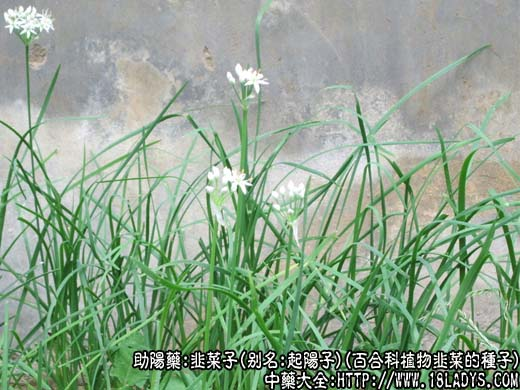
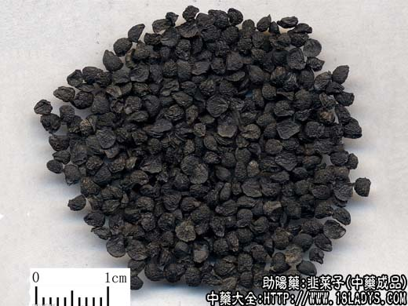
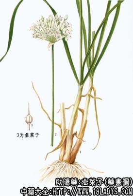

韭菜子为常用中药。载自《本草经集注》。
别名：起阳子、韭菜籽、韭子、韭菜仁。
来源：为百合科植物韭菜的种子，其叶、根亦供药用。多为栽培。
产地：全国各地均有栽培。
性状鉴别：干燥的种子呈扁平卵圆形或类三角形，稍弯曲而皱缩，周边很薄，中部较厚。粒大小约3毫米，表面黑色，一面稍凸起，一面微凹陷，凸起面粗糙而有致密的皱纹。质稍硬，手捻之有湿感。内仁白色。味苦辛，有韭菜味。
以身干、饱满、色黑、无杂质者为佳。
主要成分：种子含生物碱及皂甙。
功效与作用：韭菜子味辛性温，用治肾气过劳，不能收摄者，若阴虚火旺及阳亢不交、独阴失合误用，是抱薪救焚矣。韭菜子之功，全在补下焦肝及命门之不足。治肾阳虚遗精、单味药服用，或与补肾助阳药配伍同用。
炮制：洗净，生用或炒用、捣碎。
性味：辛、温。
归经：入肝、肾经。
功能：补肝肾、暖腰膝、壮阳固精。
主治：阳痿梦遗，小便频数，腰膝酸软，泻痢，带下。
使用注意：阴虚火旺者忌用。
用量：3～9g，或入丸、散。
处方举例：1、治玉茎强硬不痿、精流不住，时时如针刺，捏之则痛，其病名叫强中，乃肾滞漏疾也。《经验方》：韭菜子、破故纸各30g，为末。每服9g，水一盏，煎服，日三次。